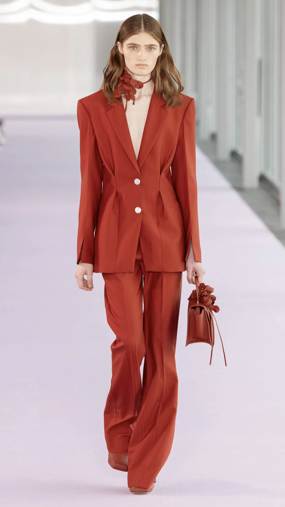
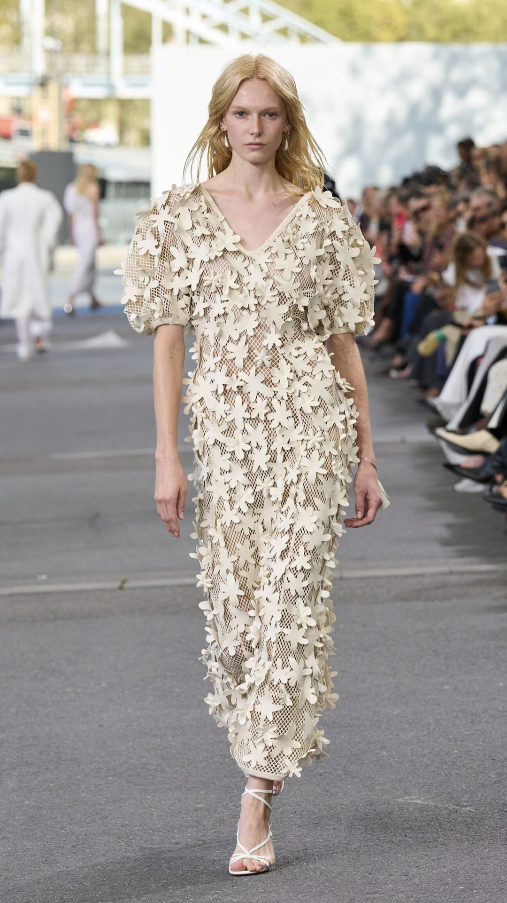
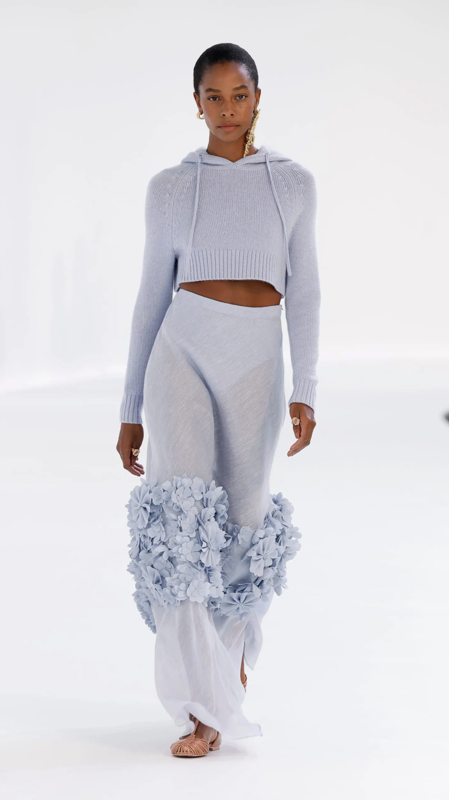
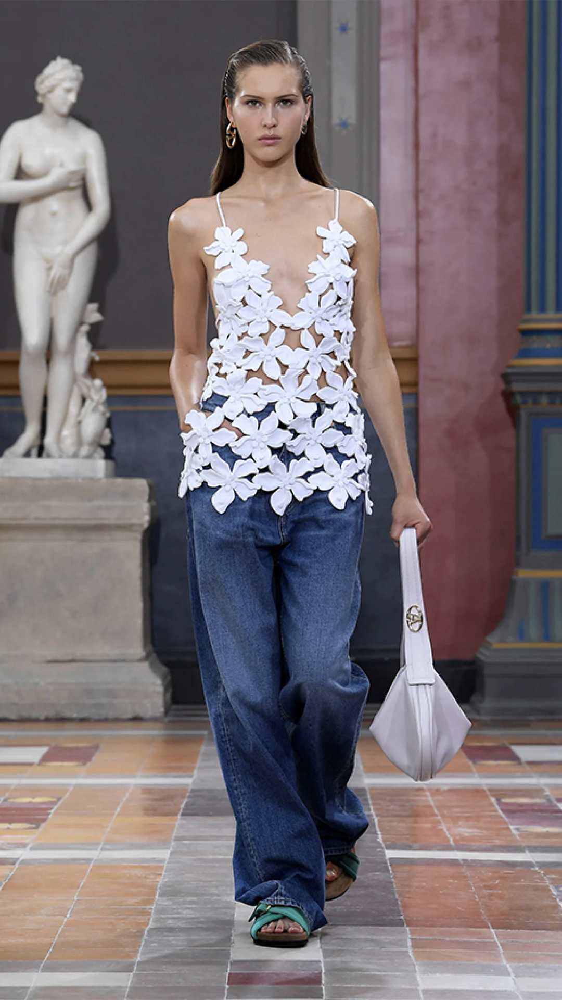
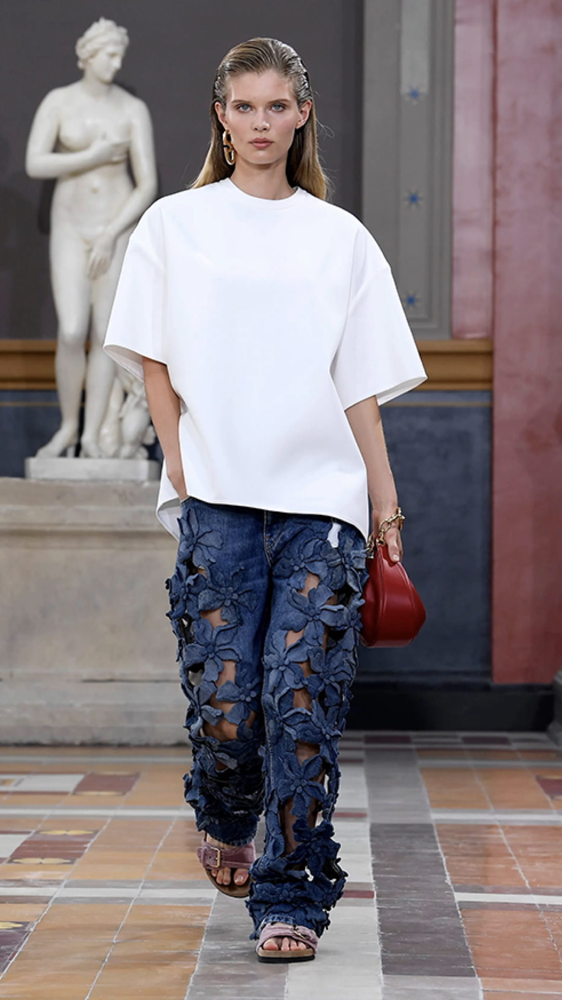
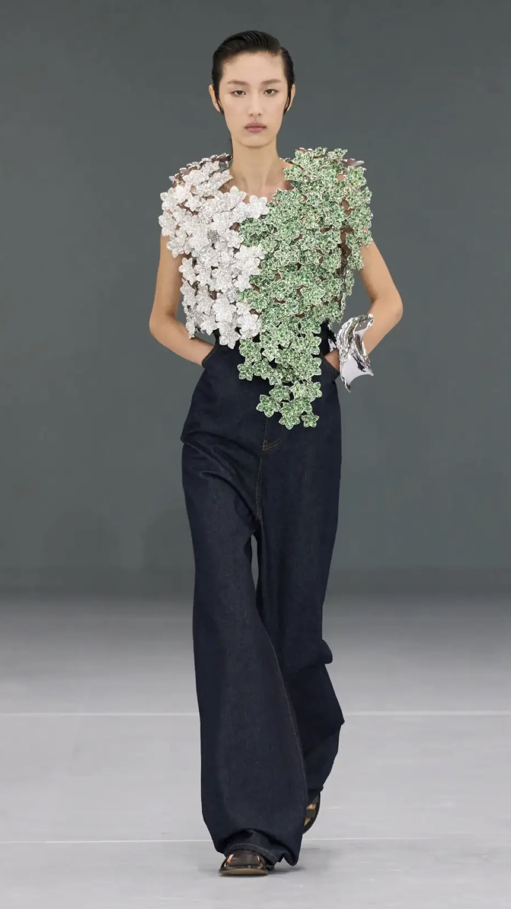
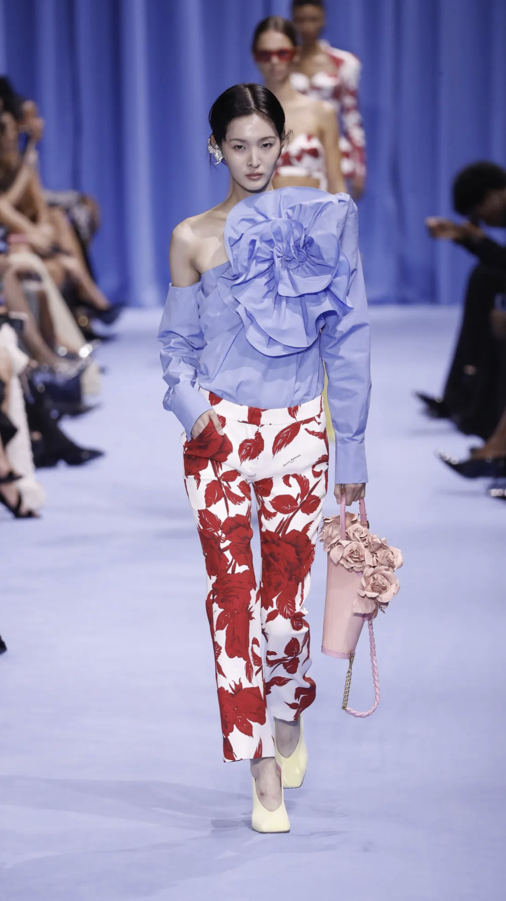
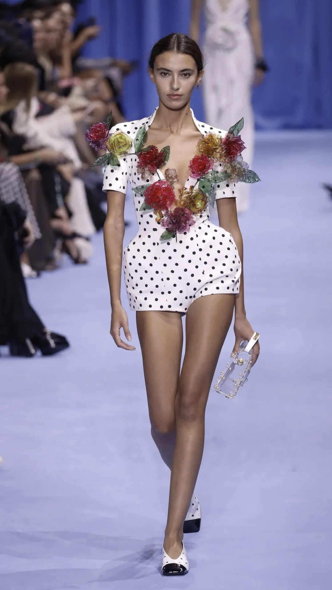

ЦВЕТЫ
Цветочный mood во всём его многообразии. Весна — цветы… ассоциация понятна. Помимо цветочного принта очень много цветов как элемента декора. На юбках и блузах, платьях и аксессуарах.
       